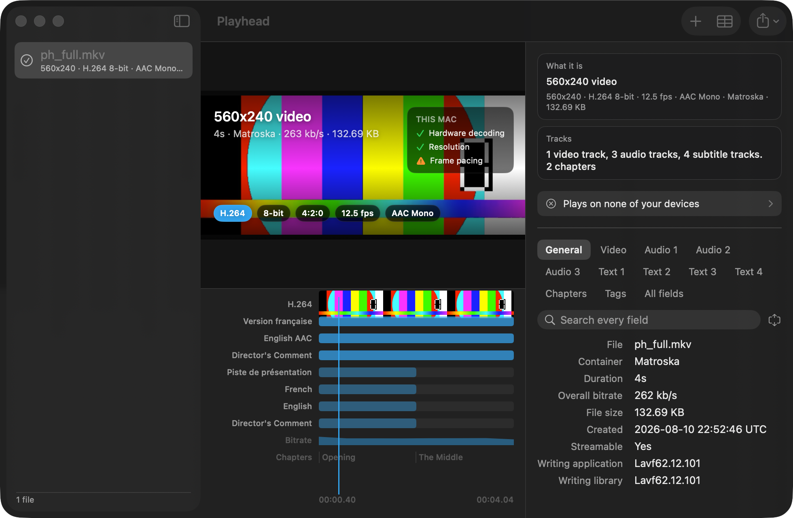
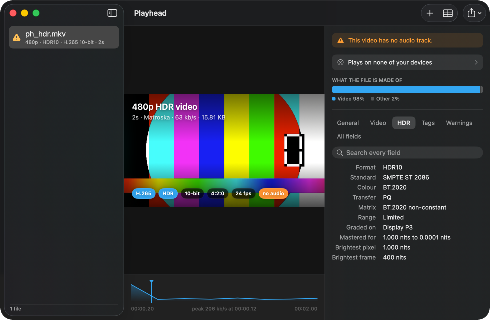
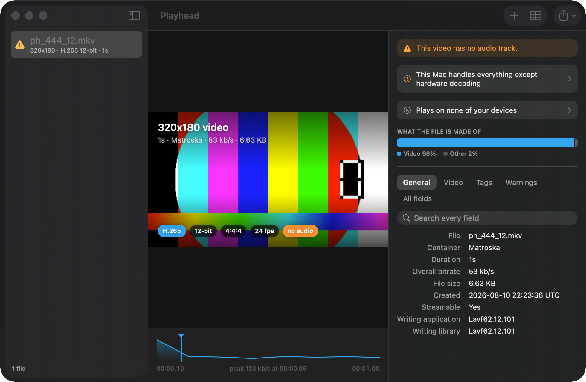
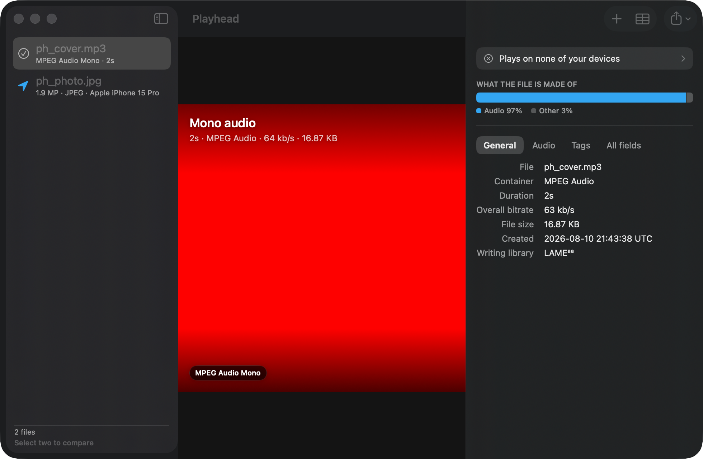

Temukan masalah pemutaran, trek, HDR, privasi, dan integritas sebelum pengiriman. Playhead menjelaskan alasan dan perbaikannya.
Dapatkan Playhead, $0.99 macOS 14 (M1+) atau yang lebih baru, iOS/iPadOS 17 atau yang lebih baru. Pembayaran sekali, tanpa langganan.Ketahui apakah berkas media sudah siap sebelum sampai ke pemutar, klien, atau layanan unggah.
Playhead memeriksa integritas, pemutaran, cakupan trek, HDR, kompatibilitas, risiko pengiriman, dan data lokasi pada foto. Setiap temuan menjelaskan alasannya dan memberi langkah berikutnya yang praktis. Coba semuanya seketika dengan audit sampel bawaan.

Sebuah daftar hanya memberitahukan bahwa sebuah film memiliki dua belas trek subtitle. Daftar tersebut tidak dapat memberitahukan bahwa salah satunya muncul selama sembilan puluh detik di tengah-tengah film. yang merupakan ciri khas trek narasi yang dipaksakan. atau bahwa trek audio kedua berhenti saat kredit ditampilkan.
Playhead menyusun setiap trek dalam satu urutan waktu: gambar sebagai gulungan film, setiap trek suara diberi nama sesuai judulnya masing-masing, dan setiap trek subtitle ditempatkan di tempat aslinya muncul.
Sebagian besar alat melaporkan format tersebut sebagai "SMPTE ST 2086" dan mencantumkan nama yang Anda kenali di kolom terpisah. Playhead diawali dengan HDR10 atau Dolby Vision, menjelaskan ke format apa pemutar yang tidak mendukungnya akan beralih, dan mengubah data mastering menjadi nilai kecerahan yang dapat Anda baca: monitor yang digunakan untuk grading, piksel tercerah, serta bingkai tercerah.


Alat lain menebak berdasarkan aturan seperti "10-bit 4:2:2 biasanya tidak memiliki dekoding perangkat keras". Aturan seperti itu sudah salah pada beberapa mesin sejak pertama kali ditulis.
Playhead menyerahkan konfigurasi codec file Anda ke VideoToolbox dan menanyakan langsung ke Mac Anda, sehingga hasilnya memperhitungkan profil, kedalaman, dan chroma yang tepat sesuai dengan yang Anda lihat. Aplikasi ini juga memeriksa kecepatan bingkai (frame rate) terhadap kecepatan refresh layar Anda, serta apakah layar Anda benar-benar dapat menampilkan HDR.
Buka file JPEG, HEIC, atau raw, dan Playhead akan membaca informasi kamera, lensa, kecepatan rana, bukaan diafragma, dan ISO, beserta bidang hak cipta dan keterangan gambar.
Jika foto tersebut masih menyimpan koordinat lokasi pengambilan gambarnya, Playhead akan memberitahukannya dengan jelas, sebelum Anda membagikannya kepada siapa pun.

Letakkan rilis web di samping salinan dari disk, lalu lihat hanya bagian yang berbeda.
Satu kali pencarian mencakup seluruh berkas, bukan hanya tab yang sedang Anda buka.
Nilai apa pun, bidang apa pun, ringkasan satu baris, atau laporan teks biasa lengkap untuk sebuah postingan forum.
JSON, XML, EBUCore, CSV, Markdown, dan teks biasa.
Tekan tombol spasi pada file Matroska di Finder dan lihat apa yang ada di dalamnya.
Periksa dengan Playhead, tanpa perlu membuka aplikasi terlebih dahulu.
Bagikan video dari File dan dapatkan jawabannya tanpa harus keluar dari lembar kerja.
Grup-grup yang telah dikurasi ini sangat memudahkan. Kumpulan lengkapnya hanya berjarak satu tab saja.
Playhead hanya membaca file di Mac atau iPhone Anda dan tidak melakukan apa pun selain itu. Tanpa akun, tanpa telemetri, tanpa permintaan jaringan, tanpa analisis. Media Anda tidak pernah meninggalkan perangkat tempatnya berada, karena tidak ada server yang menjadi tujuannya.
Matroska, MP4, QuickTime, WebM, AVI, MPEG-TS, Ogg, FLAC, WAV, MP3, dan banyak lagi, serta gambar statis termasuk JPEG, PNG, HEIC, TIFF, dan file raw. Frame diekstraksi dari H.264, H.265, AV1, VP8, dan VP9.
No. Playhead membuka berkas dalam mode baca saja dan tidak pernah menulis ke dalamnya.
Ya. Playhead adalah pembelian universal, jadi dengan membelinya sekali, Anda sudah bisa menggunakannya di Mac, iPhone, dan iPad Anda.
Fitur ini tidak hanya mengandalkan tumpukan media sistem saja. Fitur ini menggabungkan pustaka sumber terbuka yang sama yang digunakan di seluruh industri untuk membaca kontainer dan memisahkan aliran, kemudian menyerahkan proses dekoding kembali ke dekoder perangkat keras milik Apple sendiri.
Tidak. Itu tidak pernah terjadi.
Satu kali pembayaran. Mac, iPhone, dan iPad. Tidak ada data yang keluar dari perangkat Anda.
Dapatkan Playhead v1.0 $0.99, universal purchase